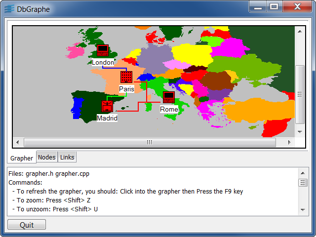

Sample: dbgraphe
Rogue Wave Views Data Access Grapher sample
This sample shows how to customize an IliDbGrapher.

This C++ sample:
- Adds a background map
- Adds several types of links and nodes
- Adds a dialog to edit the node or link parameters
To refresh the Grapher, click within it and then press F9 key.
You can:
- Double click on a node or link to change it parameters in a dialog box
- Add a node or link by adding a row in the Table Gadgets
- Add a node by clicking in the grapher, pressing Insert key and then editing the dialog box
- Add a link by clicking on a nodewith the mouse right button, kipping it down, dragging to the destination node and letting go the mouse right button
Source files: